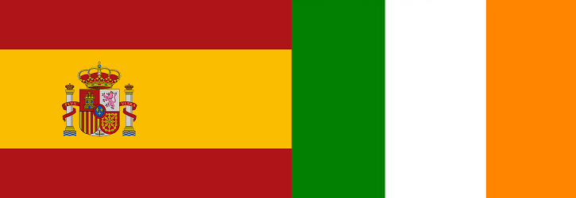

Razones para abrir su empresa en Irlanda
Puede que Irlanda sea un país pequeño, pero tiene grandes razones para abrir una empresa en él:
- La apertura de una sociedad en Irlanda es muy rápida y no requiere aporte mínimo de capital.
- El bajo impuesto sobre sociedades y un enfoque liberal al comercio. Tiene un entorno fiscal especialmente beneficioso con un impuesto sobre sociedades fijado en el 12,5% en todos los ingresos de comercio, sean o no de fabricación.
- Irlanda está perfectamente ubicada como un puente comercial entre Europa y los Estados Unidos.
- Se trata de un centro mundial de comercio electrónico, con una red de telecomunicaciones de clase mundial.
- Los generosos incentivos a la inversión completan un atractivo paquete para la constitución de empresas en Irlanda.
No es de extrañar que miles de inversionistas extranjeros hayan optado por abrir una empresa en este país. Usted podría abrir su empresa en Irlanda y operar en España, pagando así menos impuestos.
FERSORIA se ocupa por usted de todos los trámites para crear una empresa en Irlanda.
Razones para abrir su empresa en España
A pesar de las previsiones poco favorables, la economía española mantiene un elevado nivel de interés entre los inversores. ¿Por qué abrir su empresa en España? Aquí tiene 5 razones excelentes:
- Bajo capital social mínimo requerido: € 3.000 son suficientes para constituir una sociedad limitada.
- Importante centro logístico. España es el puente de Europa hacia el norte de África y el continente americano.
- Muchas regiones como Andalucía, Galicia, Extremadura o las Islas Canarias todavía otorgan importantes paquetes de subvenciones.
- El tipo de IVA (21%) está entre los más bajos de Europa.
- Excelentes oportunidades en los sectores de biotecnología, energías renovables, salud, franquicias, tecnologías de la información, logística y turismo.
FERSORIA le asesora en el proceso de crear una empresa en España.
